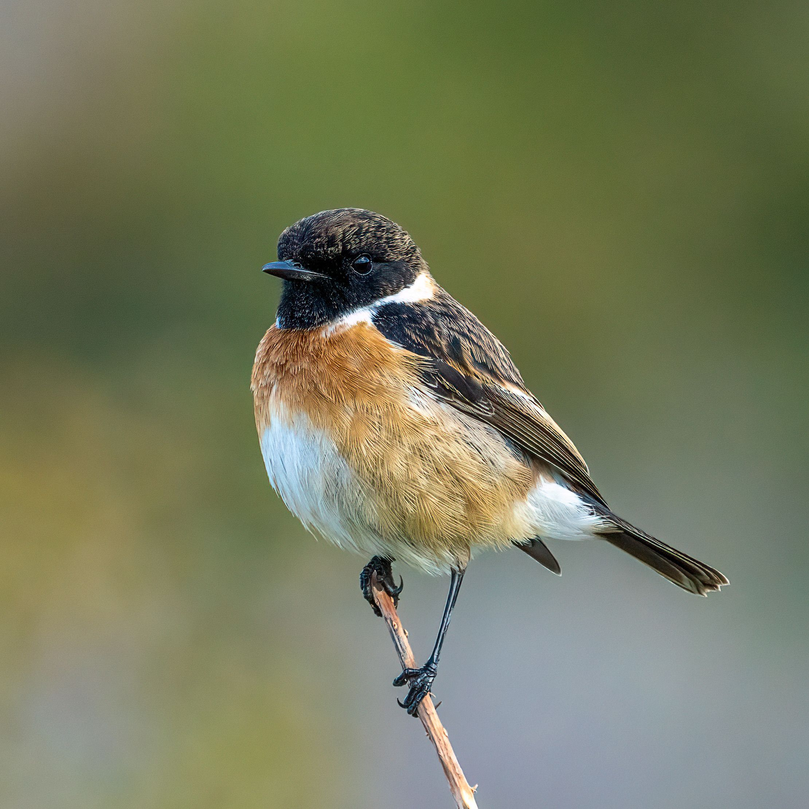

The European Stonechat is a small, upright songbird usually seen perched prominently on bushes, fences or other exposed points. The male has a black head, white neck patch, orange-red breast and dark back, while the female is browner and less strongly marked. It is especially associated with heathland, rough grassland, coastal areas and scrub. Stonechats are active hunters that watch from a perch before dropping down to catch insects and other small prey. Many populations are resident or only partly migratory, while some birds move south in winter. It can be confused with the Whinchat, but the European Stonechat has a darker head and lacks the Whinchat's strong pale eyebrow.